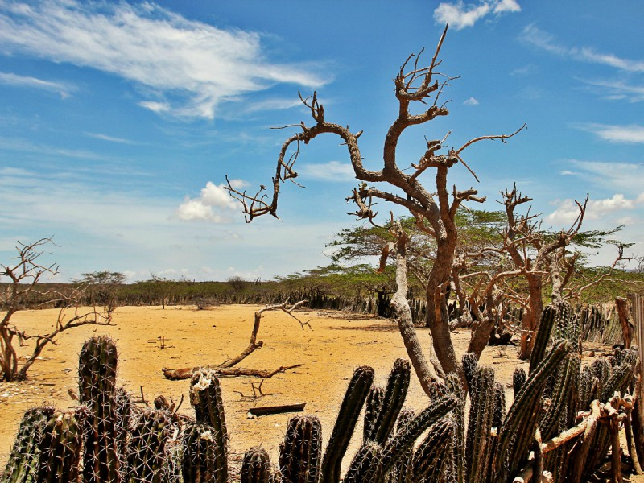

Desalinización y Bombeo Fotovoltaico como Respuesta al Estrés Hídrico Territorial
Estudio de caso de la Pila Pública de Agua en la Alta Guajira, Colombia.
- David Esteban Aranza Arias
- Laura Yeraldin Flórez Díaz
- Estefanía Zapata García
Objetivo General
Analizar la viabilidad técnica y el impacto socioambiental de un sistema comunitario de bombeo y desalinización impulsado por energía fotovoltaica para la mitigación del estrés hídrico en la Alta Guajira.
Viabilidad Técnica
Evaluar la idoneidad del acoplamiento entre paneles fotovoltaicos, inversores MPPT y membranas de ósmosis inversa en zonas ZNI.
Gobernanza Wayúu
Examinar los esquemas de gestión comunitaria, Comités de Agua y derecho propio ancestral para la apropiación del sistema.
Evaluación Socioambiental
Identificar los impactos multidimensionales en salud pública, descarbonización y reactivación económica rural.
Contexto Biofísico y Socioeconómico de la Alta Guajira
1. Características Geográficas y Biofísicas
- Ubicación: Extremo septentrional de Colombia y Sudamérica.
- Clima: Árido y semiárido extremo (>30 °C).
- Precipitación: Déficit severo <500 mm/año (García & Mendoza, 2019)García & Mendoza (2019). Diagnóstico de la vulnerabilidad hídrica e hidrogeología de la península de La Guajira..
- Potencial Solar Récord: Radiación de 5.5 a 6.0 kWh/m²/día (Durán-Camacho et al., 2016)Durán-Camacho et al. (2016). Evaluación del potencial solar y vulnerabilidad de sistemas de bombeo..
2. Socioeconomía e Infraestructura
- Zonas No Interconectadas (ZNI): Sin red eléctrica nacional continua.
- Economía Wayúu: Sustentada en pastoreo caprino y tejeduría artesanal (Guzmán, 2020)Guzmán (2020). Modelos de gestión comunitaria del agua en zonas étnicas aisladas..
- Pobreza (NBI): Necesidades Básicas Insatisfechas superiores al 80%.
- Dependencia Motobombas: Vulnerabilidad por combustible fletado (OPS, 2021)OPS (2021). Informe de agua, saneamiento e higiene en comunidades rurales vulnerables..

📷 Figura 3.1: Territorio de la Alta Guajira: aridez biofísica y alto potencial solar.
Rueda de Problemáticas: El Círculo Vicioso Territorial
1. Superficie Árida
Ausencia de fuentes superficiales y evaporación récord
Ausencia casi total de fuentes de agua dulce superficial permanente y precipitaciones escasas (<500 mm/año) combinadas con una alta evaporación que seca los jagüeyes locales (Durán-Camacho et al., 2016)Durán-Camacho et al. (2016). Evaluación del ciclo de vida y vulnerabilidad de fuentes hídricas..
Desierto hídrico permanente que obliga a las comunidades a depender de acuíferos subterráneos o fletes externos.
Dashboard Nexus: Oferta Territorial & Agenda 2030
1. Matriz de Convergencia Territorial
Escasez severa de agua dulce superficial y acuíferos subterráneos altamente salobres (Durán-Camacho et al., 2016)Durán-Camacho et al. (2016). Vulnerabilidad hídrica en ZNI..
Radiación solar récord de 5.5 a 6.0 kWh/m²/día durante más de 300 días al año (García & Mendoza, 2019)García & Mendoza (2019). Potencial fotovoltaico peninsular..
Conversión de agua salobre en potable mediante bombeo fotovoltaico autónomo sin combustibles (Torres, 2024)Torres (2024). Desalinización fotovoltaica en La Guajira..
2. Red Nexus ODS (Agenda 2030)
ODS 6: Agua Limpia y Saneamiento
Agenda 2030Garantiza el acceso equitativo y continuo a agua potable segura desalinizada mediante el sistema comunitario de Pila Pública, erradicando la dependencia de jagüeyes contaminados (Torres, 2024)Torres (2024). Acceso universal a agua segura en zonas de vulnerabilidad..
Diagrama de Flujo Técnico: Sistema Pila Pública Solar-to-Water
1. Capta la Energía (Arreglo Fotovoltaico)
Los módulos solares captan la radiación solar constante de la Alta Guajira (5.5 a 6.0 kWh/m²/día) y la convierten directamente en corriente continua (DC), eliminando cualquier insumo fósil (García & Mendoza, 2019)García & Mendoza (2019). Evaluación de la radiación fotovoltaica peninsular..
Módulos de 3 a 5 kWp (plantas comunitarias) o 15 a 30 kWp (estaciones centrales), inclinación fija optimizada a 11° norte.
Impactos Esperados del Proyecto
- • Descarbonización total: Sustitución completa de diésel por radiación fotovoltaica limpia.
- • Preservación de suelos: Cero riesgo de derrames de hidrocarburos e inquinación de acuíferos.
- • Gestión sostenible: Extracción hidrogeológica regulada y evaporación de salmuera.

- • Salud Pública: Erradicación de bacterias patógenas y drástica reducción de EDA en niñez.
- • Equidad y tiempo: Liberación de horas de acarreo manual para mujeres y niñas Wayúu.
- • Apropiación comunitaria: Fortalecimiento del tejido social en la Pila Pública.

- • Ahorro operativo: Eliminación permanente de costos de flete diésel y carrotanques.
- • Reactivación productiva: Impulso al pastoreo caprino y a la tejeduría artesanal.
- • Fondo Comunitario: Microtarifas para sostenibilidad técnica sin dependencia estatal.
Red de Co-Gobernanza Territorial: Diagrama Ecosistémico
Comunidad Wayúu & Autoridades Tradicionales
- • Co-diseño territorial respetando el derecho propio (Jayeechi).
- • Custodia y protección física de la infraestructura de la Pila Pública.
- • Toma de decisiones ejecutivas en el Comité Comunitario de Agua.
- • Administración autónoma del fondo de microtarifas de mantenimiento.
Matriz Táctica: Desafíos Territoriales vs. Soluciones
Mantenimiento y Cadena de Suministros
Distancia geográfica de las rancherías que dificulta la consecución de repuestos (filtros/membranas) y la llegada oportuna de técnicos especializados.
Estandarización de stock local + Red de alianzas con aprendices técnicos del SENA e institutos territoriales para mantenimiento autónomo.
Apropiación Cultural y Gobernanza Ancestral
Riesgo de abandono, desuso o vandalismo si la infraestructura se percibe como una imposición externa ajena a las dinámicas Wayúu.
Co-diseño con autoridades tradicionales Wayúu + Constitución formal del Comité Comunitario de Agua y Energía para la custodia local.
Viabilidad Económica a Largo Plazo
Imposibilidad comunitaria para asumir costos elevados de repuestos mayores (membranas/controladores) al finalizar su ciclo inicial de operación.
Esquema de Microtarifas Solidarias Comunitarias para alimentar un Fondo Colectivo de Mantenimiento exclusivo para insumos.
Gestión de Residuos Electrónicos (E-Waste)
Riesgo de contaminación por acumulación de basura electrónica (paneles solares, baterías degradadas y membranas agotadas) al cumplir su vida útil (10-25 años).
Logística Inversa y Retorno con proveedores bajo Responsabilidad Extendida del Productor (REP) + Manejo seguro de membranas agotadas.
Referencias Bibliográficas (APA 7.ª Edición)
- Durán-Camacho, J., Martínez, L., & Gómez, C. (2016). Evaluación del ciclo de vida y vulnerabilidad de sistemas de bombeo diésel en Zonas No Interconectadas de Colombia. Revista de Ensayos Ambientales y Energías Renovables, 12(2), 45-58.
- García, M., & Mendoza, R. (2019). Diagnóstico de la vulnerabilidad hídrica e hidrogeología de la península de La Guajira. Instituto de Investigaciones Ambientales de Colombia.
- Guzmán, L. F. (2020). Modelos de gestión comunitaria del agua en zonas étnicas aisladas: El caso del pueblo Wayúu en la Alta Guajira. Editorial Universidad Nacional de Colombia.
- MinCiencias. (2021). Atlas de Radiación Solar y Potencial Energético Fotovoltaico en Zonas No Interconectadas de Colombia. Ministerio de Ciencia, Tecnología e Innovación.
- OPS. (2021). Informe sobre agua, saneamiento e higiene en comunidades rurales vulnerables de América Latina. Organización Panamericana de la Salud.
- Torres, A. (2024). Impacto socioeconómico, sanitario y ambiental de la potabilización fotovoltaica en sistemas de pila pública en La Guajira. Revista Latinoamericana de Desarrollo Sostenible, 18(1), 112-129.